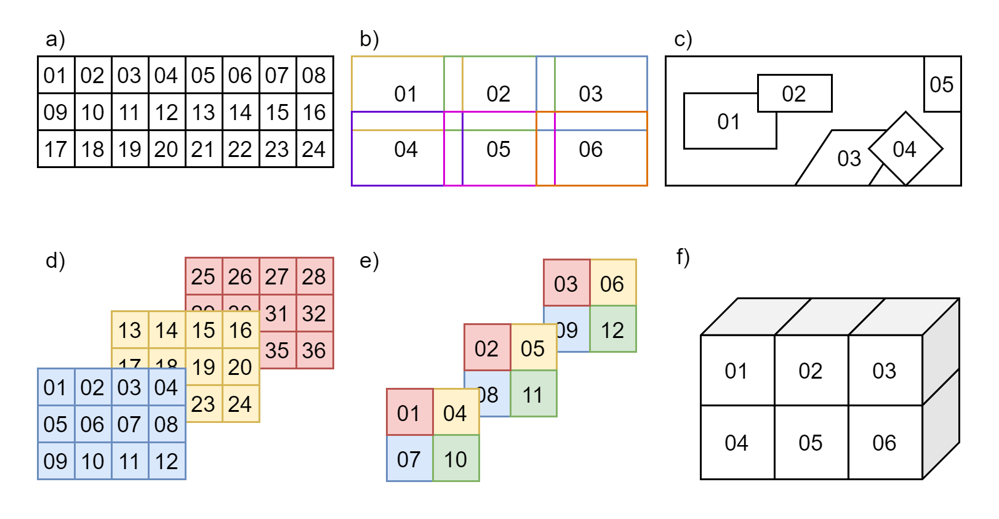

Microscopy
Support for Microscopy was developed as a BIDS Extension Proposal.
Please see Citing BIDS on how to appropriately credit this extension when referring to it in the context of the academic literature.
Example datasets
Microscopy datasets formatted using this specification are available on the BIDS examples repository and can be used for practical guidance when curating a new dataset.
Further Microscopy datasets are available:
- In PNG format:
data_axondeepseg_sem - In OME-TIFF format:
Broca's Area Light-Sheet Microscopy
Microscopy imaging data
Template:
sub-<label>/
[ses-<label>/]
micr/
sub-<label>[_ses-<label>]_sample-<label>[_acq-<label>][_stain-<label>][_run-<index>][_chunk-<index>]_<suffix>.<extension>
sub-<label>[_ses-<label>]_sample-<label>[_acq-<label>][_stain-<label>][_run-<index>][_chunk-<index>]_<suffix>.json
Legend:
-
For more information about filename elements (for example, entities, suffixes, extensions), follow the links embedded in the filename template.
-
<matches>is a placeholder to denote an arbitrary (and valid) sequence of entities and labels at the beginning of the filename (only BIDS "raw"). -
<source_entities>is a placeholder to denote an arbitrary sequence of entities and labels at the beginning of the filename matching a source file from which the file derives (only BIDS-Derivatives). -
Filename entities or directories between square brackets (for example,
[_ses-<label>]) are OPTIONAL. -
Some entities may only allow specific values, in which case those values are listed in
<>, separated by|. -
_<suffix>means that there are several (>6) valid suffixes for this filename pattern. -
.<extension>means that there are several (>6) valid extensions for this file type. -
[.gz]means that both the unzipped and gzipped versions of the extension are valid.
Microscopy data MUST be stored in the micr directory.
File formats
The Microscopy community uses a variety of formats for storing raw data, and there is no single standard that all researchers agree on. However, a standardized file structure has been developed by the Open Microscopy Environment for whole-slide imaging with the OME-TIFF file specifications. The OME-TIFF file allows for multi-page TIFF files to store multiple image planes and supports multi-resolution pyramidal tiled images. An OME-XML data block is also embedded inside the file's header. Further, OME-ZARR (sometimes referred to as OME-NGFF or NGFF) has been developed to provide improved access and storage for large data via chunked and compressed N-dimensional arrays.
The BIDS standard accepts microscopy data in a number of file formats to accommodate datasets stored in 2D image formats and whole-slide imaging formats, to accommodate lossless and lossy compression, and to avoid unnecessary conversions of the original data from a non-tiled to a tiled format, or vice-versa.
Microscopy raw data MUST be stored in one of the following formats:
-
Portable Network Graphics (
.png) -
Tag Image File Format (
.tif) -
OME-TIFF (
.ome.tiffor standard TIFF files or.ome.btffor BigTIFF files) -
OME-ZARR/NGFF (
.ome.zarrdirectories)
Modality suffixes
Microscopy data currently support the following imaging modalities:
| Name | suffix |
Description |
|---|---|---|
| 2-photon excitation microscopy | 2PE | 2-photon excitation microscopy imaging data |
| Bright-field microscopy | BF | Bright-field microscopy imaging data |
| Coherent anti-Stokes Raman spectroscopy | CARS | Coherent anti-Stokes Raman spectroscopy imaging data |
| Confocal microscopy | CONF | Confocal microscopy imaging data |
| Differential interference contrast microscopy | DIC | Differential interference contrast microscopy imaging data |
| Dark-field microscopy | DF | Dark-field microscopy imaging data |
| Fluorescence microscopy | FLUO | Fluorescence microscopy imaging data |
| Multi-photon excitation microscopy | MPE | Multi-photon excitation microscopy imaging data |
| Nonlinear optical microscopy | NLO | Nonlinear optical microscopy imaging data |
| Optical coherence tomography | OCT | Optical coherence tomography imaging data |
| Phase-contrast microscopy | PC | Phase-contrast microscopy imaging data |
| Polarized-light microscopy | PLI | Polarized-light microscopy imaging data |
| Scanning electron microscopy | SEM | Scanning electron microscopy imaging data |
| Selective plane illumination microscopy | SPIM | Selective plane illumination microscopy imaging data |
| Super-resolution microscopy | SR | Super-resolution microscopy imaging data |
| Transmission electron microscopy | TEM | Transmission electron microscopy imaging data |
| X-ray Phase-Contrast Tomography | XPCT | X-ray phase-contrast tomography imaging data |
| Micro-CT | uCT | Micro-CT imaging data |
Filename entities
In the context of Microscopy, a session (ses-<label>)
can refer to all the acquisitions between the start and the end of an imaging experiment
for ex vivo imaging, or a subject lab visit for biopsy procedure and/or in vivo imaging.
Consistent with other data types in BIDS, the session entity is optional.
The sample-<label> entity is REQUIRED for
Microscopy data and is used to distinguish between different samples from the same subject.
The label MUST be unique per subject and is RECOMMENDED to be unique throughout the dataset.
For example: Three brain slices (sample-01 to sample-03) extracted from subject sub-01,
imaged by scanning electron microscopy (SEM) in PNG format
└─ sub-01/
└─ micr/
├─ sub-01_sample-01_SEM.png
├─ sub-01_sample-02_SEM.png
├─ sub-01_sample-03_SEM.png
└─ sub-01_SEM.json
In this example, the JSON metadata is common for all samples of sub-01.
JSON metadata may be defined per subject or per sample as appropriate, as per the
inheritance principle.
The acq-<label> entity corresponds to a custom label that
MAY be used to distinguish a different set of parameters used for acquiring the same modality.
For example, two images of the same sample acquired by bright-field microscopy (BF) in PNG format at
different magnification of 40x and 60x.
In such case two files could have the following names: sub-01_sample-01_acq-40x_BF.png and
sub-01_sample-01_acq-60x_BF.png, however the user is free to choose any other label as long as
they are consistent across subjects and sessions.
The stain-<label> entity MAY be used to distinguish
image files from the same sample using different stains or antibodies for contrast enhancement.
For example: One brain slice (sample-01) extracted from subject sub-01 with three
stains (stain-01, stain-02 and stain-03) in three separate files, imaged by selective plane
illumination microscopy (SPIM) in OME-TIFF format
└─ sub-01/
└─ micr/
├─ sub-01_sample-01_stain-01_SPIM.ome.tif
├─ sub-01_sample-01_stain-01_SPIM.json
├─ sub-01_sample-01_stain-02_SPIM.ome.tif
├─ sub-01_sample-01_stain-02_SPIM.json
├─ sub-01_sample-01_stain-03_SPIM.ome.tif
└─ sub-01_sample-01_stain-03_SPIM.json
In this example, the entity stain is used to distinguish images with different
stains in separate files from the same sample.
In the case where a single file contains different staining in each channel, the
stain-<label> is omitted.
Stains SHOULD be indicated in the "SampleStaining" key in the sidecar JSON file,
although the label may be different.
Description of antibodies SHOULD also be indicated in "SamplePrimaryAntibodies"
and/or "SampleSecondaryAntobodies" as appropriate.
If more than one run of the same sample, acquisition and stain are acquired during the same
session, the run-<index> entity MUST be used:
_run-1, _run-2, _run-3, and so on.
If only one run was acquired the run-<index> can be omitted.
The chunk-<index> entity is used when multiples
regions (2D images or 3D volumes files) of the same physical sample are imaged with different
fields of view, regardless if they overlap or not.
In some cases, the chunks can be "ordered" and, for example, correspond to the displacement of the microscope stage. In other cases, the chunks can be different images of the same sample with no explicit spatial relation between them.
Examples of different chunks configurations can be seen in Figure 1. 
Figure 1: Examples of chunks configurations.
- a) ordered 2D chunks without overlap,
- b) ordered 2D chunks with overlap,
- c) unordered 2D chunks with and without overlap,
- d) and e) ordered 2D chunks on different 3D planes,
- f) ordered 3D chunks.
For example: Four chunks (chunk-01 to chunk-04) from the same brain sample (sample-01)
of subject sub-01, imaged by confocal microscopy (CONF) in OME-TIFF format
└─ sub-01/
└─ micr/
├─ sub-01_sample-01_chunk-01_CONF.ome.tif
├─ sub-01_sample-01_chunk-01_CONF.json
├─ sub-01_sample-01_chunk-02_CONF.ome.tif
├─ sub-01_sample-01_chunk-02_CONF.json
├─ sub-01_sample-01_chunk-03_CONF.ome.tif
├─ sub-01_sample-01_chunk-03_CONF.json
├─ sub-01_sample-01_chunk-04_CONF.ome.tif
└─ sub-01_sample-01_chunk-04_CONF.json
The index number can be assigned arbitrarily and, in the case of "ordered" chunks, the chunks' relative positions (in terms of scaling and translation) SHOULD be defined by an affine transformation matrix in the JSON sidecar file of each chunk, as described in Chunk Transformations.
In this example, the JSON metadata is different for each chunk of sub-01_sample-01.
JSON metadata may be defined per sample or per chunk as appropriate, as per the
inheritance principle.
In microscopy, many pyramidal file formats store multiple resolutions for the same acquisition.
In the case where a multiple resolutions file format is converted to single resolution file format,
only the higher resolution file is present in the raw data.
Lower resolutions files MUST be placed under the derivatives directory and use the
res-<label> entity.
For example:
└─ my_dataset/
├─ derivatives/
│ └─ downsampled/
│ └─ sub-01/
│ └─ micr/
│ ├─ sub-01_sample-01_res-4x_TEM.png
│ └─ sub-01_sample-01_res-4x_TEM.json
└─ sub-01/
└─ micr/
├─ sub-01_sample-01_TEM.png
└─ sub-01_sample-01_TEM.json
See Preprocessed, coregistered and/or resampled volumes for details.
Microscopy metadata (Sidecar JSON)
Microscopy data MUST be described by metadata fields, stored in sidecar JSON files.
Image Acquisition
| Key name | Requirement Level | Data type | Description |
|---|---|---|---|
| PixelSize | REQUIRED | array of numbers | A 2- or 3-number array of the physical size of a pixel, either [PixelSizeX, PixelSizeY] or [PixelSizeX, PixelSizeY, PixelSizeZ], where X is the width, Y the height and Z the depth. If the file format is OME-TIFF, these values need to be consistent with PhysicalSizeX, PhysicalSizeY and PhysicalSizeZ OME metadata fields, after converting in PixelSizeUnits according to PhysicalSizeXunit, PhysicalSizeYunit and PhysicalSizeZunit OME fields. |
| PixelSizeUnits | REQUIRED | string | Unit format of the specified "PixelSize". MUST be one of: "mm" (millimeter), "um" (micrometer) or "nm" (nanometer).Must be one of: "mm", "um", "nm". |
| Immersion | OPTIONAL | string | Lens immersion medium. If the file format is OME-TIFF, the value MUST be consistent with the Immersion OME metadata field. |
| NumericalAperture | OPTIONAL | number | Lens numerical aperture (for example: 1.4). If the file format is OME-TIFF, the value MUST be consistent with the LensNA OME metadata field.Must be a number greater than 0. |
| Magnification | OPTIONAL | number | Lens magnification (for example: 40). If the file format is OME-TIFF, the value MUST be consistent with the "NominalMagnification" OME metadata field.Must be a number greater than 0. |
| ImageAcquisitionProtocol | OPTIONAL | string | Description of the image acquisition protocol or URI (for example from protocols.io). |
| OtherAcquisitionParameters | OPTIONAL | string | Description of other relevant image acquisition parameters. |
Sample
| Key name | Requirement Level | Data type | Description |
|---|---|---|---|
| BodyPart | RECOMMENDED | string | Body part of the organ / body region scanned. From DICOM Body Part Examined (for example "BRAIN"). |
| BodyPartDetails | RECOMMENDED | string | Additional details about body part or location (for example: "corpus callosum"). |
| BodyPartDetailsOntology | OPTIONAL | string | URI of ontology used for BodyPartDetails (for example: "https://www.ebi.ac.uk/ols/ontologies/uberon"). |
| SampleEnvironment | RECOMMENDED | string | Environment in which the sample was imaged. MUST be one of: "in vivo", "ex vivo" or "in vitro".Must be one of: "in vivo", "ex vivo", "in vitro". |
| SampleEmbedding | OPTIONAL | string | Description of the tissue sample embedding (for example: "Epoxy resin"). |
| SampleFixation | OPTIONAL | string | Description of the tissue sample fixation (for example: "4% paraformaldehyde, 2% glutaraldehyde"). |
| SampleStaining | RECOMMENDED | string or array of strings | Description(s) of the tissue sample staining (for example: "Osmium"). MAY be an array of strings if different stains are used in each channel of the file (for example: ["LFB", "PLP"]). |
| SamplePrimaryAntibody | RECOMMENDED | string or array of strings | Description(s) of the primary antibody used for immunostaining. Either an RRID or the name, supplier and catalog number of a commercial antibody. For non-commercial antibodies either an RRID or the host-animal and immunogen used (for examples: "RRID:AB_2122563" or "Rabbit anti-Human HTR5A Polyclonal Antibody, Invitrogen, Catalog # PA1-2453"). MAY be an array of strings if different antibodies are used in each channel of the file. |
| SampleSecondaryAntibody | RECOMMENDED | string or array of strings | Description(s) of the secondary antibody used for immunostaining. Either an RRID or the name, supplier and catalog number of a commercial antibody. For non-commercial antibodies either an RRID or the host-animal and immunogen used (for examples: "RRID:AB_228322" or "Goat anti-Mouse IgM Secondary Antibody, Invitrogen, Catalog # 31172"). MAY be an array of strings if different antibodies are used in each channel of the file. |
| SliceThickness | OPTIONAL | number | Slice thickness of the tissue sample in the unit micrometers ("um") (for example: 5).Must be a number greater than 0. |
| TissueDeformationScaling | OPTIONAL | number | Estimated deformation of the tissue, given as a percentage of the original tissue size (for examples: for a shrinkage of 3%, the value is 97; and for an expansion of 100%, the value is 200).Must be a number greater than 0. |
| SampleExtractionProtocol | OPTIONAL | string | Description of the sample extraction protocol or URI (for example from protocols.io). |
| SampleExtractionInstitution | OPTIONAL | string | The name of the institution in charge of the extraction of the sample, if different from the institution in charge of the equipment that produced the image. |
Chunk Transformations
Chunk transformations metadata describes the spatial relation between chunks of the same sample in an implicit coordinate system.
-
The source frame of reference is the frame of reference of the associated image.
-
The target frame of reference is the implicit coordinate system of the transform.
-
The target frame of reference has the same units as the
PixelSizeUnitsmetadata. -
The chunk transformation is described by 2 metadata fields: an affine transformation matrix and a description of the axis of the matrix.
-
Other transformations should be described in derivatives.
| Key name | Requirement Level | Data type | Description |
|---|---|---|---|
| ChunkTransformationMatrix | RECOMMENDED if chunk-<index> is used in filenames |
array of arrays | 3x3 or 4x4 affine transformation matrix describing spatial chunk transformation, for 2D and 3D respectively (for examples: [[2, 0, 0], [0, 3, 0], [0, 0, 1]] in 2D for 2x and 3x scaling along the first and second axis respectively; or [[1, 0, 0, 0], [0, 2, 0, 0], [0, 0, 3, 0], [0, 0, 0, 1]] in 3D for 2x and 3x scaling along the second and third axis respectively). Note that non-spatial dimensions like time and channel are not included in the transformation matrix. |
| ChunkTransformationMatrixAxis | REQUIRED if ChunkTransformationMatrix is present |
array of strings | Describe the axis of the ChunkTransformationMatrix (for examples: ["X", "Y"] or ["Z", "Y", "X"]). |
An example of chunk transformations JSON metadata for chunk-01 and chunk-05 of Figure 2
is shown below:

Figure 2: Example figure for chunks transformations.
In this example, there is no scaling and chunk-01 is at the origin.
chunk-05 is translated by 5 um along X+ and by 3 um along Y+.
*_chunk-01_<suffix>.json:
{
"PixelSize": [1, 1],
"PixelSizeUnits": "um",
"ChunkTransformationMatrix": [[1, 0, 0],
[0, 1, 0],
[0, 0, 1]],
"ChunkTransformationMatrixAxis": ["X", "Y"]
}
*_chunk-05_<suffix>.json:
{
"PixelSize": [1, 1],
"PixelSizeUnits": "um",
"ChunkTransformationMatrix": [[1, 0, 5],
[0, 1, 3],
[0, 0, 1]],
"ChunkTransformationMatrixAxis": ["X", "Y"]
}
Hardware information
| Key name | Requirement Level | Data type | Description |
|---|---|---|---|
| Manufacturer | RECOMMENDED | string | Manufacturer of the equipment that produced the measurements. |
| ManufacturersModelName | RECOMMENDED | string | Manufacturer's model name of the equipment that produced the measurements. |
| DeviceSerialNumber | RECOMMENDED | string | The serial number of the equipment that produced the measurements. A pseudonym can also be used to prevent the equipment from being identifiable, so long as each pseudonym is unique within the dataset. |
| StationName | RECOMMENDED | string | Institution defined name of the machine that produced the measurements. |
| SoftwareVersions | RECOMMENDED | string | Manufacturer's designation of software version of the equipment that produced the measurements. |
Institution information
| Key name | Requirement Level | Data type | Description |
|---|---|---|---|
| InstitutionName | RECOMMENDED | string | The name of the institution in charge of the equipment that produced the measurements. |
| InstitutionAddress | RECOMMENDED | string | The address of the institution in charge of the equipment that produced the measurements. |
| InstitutionalDepartmentName | RECOMMENDED | string | The department in the institution in charge of the equipment that produced the measurements. |
Example of sidecar JSON file (*_<suffix>.json)
{
"Manufacturer": "Hamamatsu",
"ManufacturersModelName": "C9600-12",
"PixelSize": [0.23, 0.23],
"PixelSizeUnits": "um",
"Magnification": 40,
"BodyPart": "BRAIN",
"BodyPartDetails": "corpus callosum",
"SampleEnvironment": "ex vivo",
"SampleFixation": "4% paraformaldehyde, 2% glutaraldehyde",
"SampleStaining": "LFB",
"SliceThickness": 5,
"TissueDeformationScaling": 97
}
Required Samples file
For Microscopy data, the Samples file
samples.tsv is REQUIRED and its associated sidecar samples.json file is RECOMMENDED.
Additional optional columns MAY be used to describe other samples' attributes.
Recommended Participants data
For Microscopy data, we RECOMMEND to make use of the columns species, strain and
strain_rrid in the Participants file
when applicable.
Additional optional columns MAY be used to describe other subjects' attributes.
participants.tsv example:
| participant_id | species | strain | strain_rrid |
|---|---|---|---|
| sub-01 | mus | musculus | C57BL/6J |
| sub-02 | mus | musculus | C57BL/6J |
participants.json example:
{
"species": {
"Description": "binomial species name from the NCBI Taxonomy (https://www.ncbi.nlm.nih.gov/Taxonomy/Browser/wwwtax.cgi)"
},
"strain": {
"Description": "name of the strain of the species"
},
"strain_rrid": {
"Description": "research resource identifier (RRID) of the strain (https://rrid.site/data/source/nlx_154697-1/search)"
}
}
Photos of the samples (*_photo.<extension>)
Photos of the tissue sample, overview microscopy scans or blockface images from cutting MAY be included for visualization of large samples or to indicate the location of chunks in a sample.
Template:
sub-<label>/
[ses-<label>/]
micr/
sub-<label>[_ses-<label>]_sample-<label>[_acq-<label>]_photo.<extension>
sub-<label>[_ses-<label>]_sample-<label>[_acq-<label>]_photo.json
Legend:
-
For more information about filename elements (for example, entities, suffixes, extensions), follow the links embedded in the filename template.
-
<matches>is a placeholder to denote an arbitrary (and valid) sequence of entities and labels at the beginning of the filename (only BIDS "raw"). -
<source_entities>is a placeholder to denote an arbitrary sequence of entities and labels at the beginning of the filename matching a source file from which the file derives (only BIDS-Derivatives). -
Filename entities or directories between square brackets (for example,
[_ses-<label>]) are OPTIONAL. -
Some entities may only allow specific values, in which case those values are listed in
<>, separated by|. -
_<suffix>means that there are several (>6) valid suffixes for this filename pattern. -
.<extension>means that there are several (>6) valid extensions for this file type. -
[.gz]means that both the unzipped and gzipped versions of the extension are valid.
The file <extension> for photos MUST be either .jpg, .png or .tif.
The acq-<label> entity MAY be used to indicate
acquisition of different photos of the same sample.
For example:
└─ sub-01/
└─ ses-01/
└─ micr/
├─ sub-01_ses-01_sample-01_acq-1_photo.jpg
└─ sub-01_ses_01_sample-01_acq-2_photo.jpg
Photo data MAY be accompanied by a JSON file containing the following fields.
The IntendedFor field is used to link the photo to specific image(s) it was acquired for.
| Key name | Requirement Level | Data type | Description |
|---|---|---|---|
| PhotoDescription | OPTIONAL | string | Description of the photo. |
| IntendedFor | OPTIONAL | string or array | The paths to files for which the associated file is intended to be used. Contains one or more BIDS URIs. Using forward-slash separated paths relative to the participant subdirectory is DEPRECATED. This field is OPTIONAL, in case the photos do not correspond to any particular images, it does not have to be filled. |
For example: sub-01_ses-01_sample-01_acq-1_photo.json
{
"PhotoDescription": "After clearing",
"IntendedFor": [
"ses-01/micr/sub-01_ses-01_sample-01_run-1_chunk-01_SPIM.ome.tif",
"ses-01/micr/sub-01_ses-01_sample-01_run-1_chunk-02_SPIM.ome.tif",
"ses-01/micr/sub-01_ses-01_sample-01_run-1_chunk-03_SPIM.ome.tif",
"ses-01/micr/sub-01_ses-01_sample-01_run-1_chunk-04_SPIM.ome.tif"
]
}
Below is an example of a spinal cord SEM overview, modified from Zaimi et al., 2018. doi:10.1038/s41598-018-22181-4.
sub-01_sample-01_photo.jpg